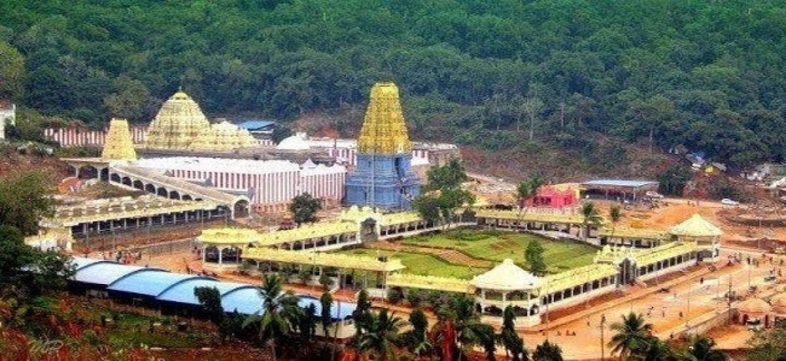

"Best Places to Visit"
List
- Indira Gandhi Zoological Park
- Simhachalam Temple
- Yarada Beach
Indira Gandhi Zoological Park
Indira Gandhi Zoological Park, is one of the largest zoos in Andhra Pradesh, India. Located in the picturesque setting of the Eastern Ghats and near the scenic Kambalakonda Reserve Forest, it spans over 625 acres. The zoo is home to a diverse array of animals, birds, and reptiles, with more than 80 species on display. Visitors can explore various sections dedicated to mammals, reptiles, birds, and aquatic species, with facilities including a safari park and educational programs. It serves as a popular destination for families, nature enthusiasts, and wildlife lovers, providing an opportunity to learn about and appreciate wildlife conservation.

Simhachalam Temple
Simhachalam Temple is a renowned Hindu temple dedicated to Lord Varaha Narasimha, an incarnation of Lord Vishnu. Perched on the Simhachalam Hill, the temple combines architectural grandeur with spiritual significance. Known for its intricate carvings and a unique idol that remains covered in sandalwood paste throughout the year, the temple attracts thousands of devotees and tourists. The annual Chandanotsavam festival, when the sandalwood paste is removed, reveals the idol and draws large crowds. With its rich history and cultural importance, Simhachalam Temple is a major pilgrimage site and a symbol of the region's religious heritage
Yarada Beach
Kerala Houseboats, locally known as kettuvallams, offer a unique way to experience the serene backwaters of Kerala. These traditional boats, once used for transporting rice and spices, have been converted into luxurious floating cottages. They provide a tranquil and scenic journey through lush landscapes, coconut groves, and vibrant villages, making them a popular tourist attraction.